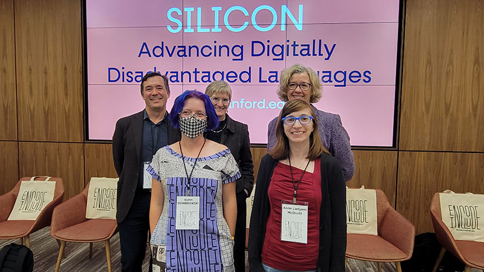

As written communication shifts more towards the digital, exclusion from digital spaces can be a death sentence for languages that are already struggling to maintain their speaker communities in the face of globalization. New, emerging writing systems face competition from “easier” systems that are often based on English, and their disadvantage is compounded when there’s no way to use them on mobile devices. On October 27th, the new SILICON project (Stanford Initiative on Language Inclusion and Conservation in Old and New Media), led by co-PIs Thomas S. Mullaney (History), Kathryn Starkey (DLCL), and Elaine Treharne (English), launched with the event Encode/Include, which brought leading figures in the Unicode consortium, multilingual font design, and internationalization to the Silicon Valley Archive in Hohbach Hall for an engaging conversation on the challenges they face in their work, and the opportunities to bolster a more linguistically-inclusive future in tech.

Following an introduction by Stanford University Librarian Michael Keller, and an overview of the Library's Global Computing exhibit by Henry Lowood, Mullaney briefly described SILICON as an effort to coordinate targeted interventions throughout the “inclusion stack” for Digitally Disadvantaged Languages (DDLs), a category which encompasses 97% of all living languages around the world. The question-and-answer session with the panel offered a range of perspectives on different elements of that stack, from who gets to be at the table for key decisions at tech companies, to the tremendous amount of research needed to design a font – or find who takes commissions for underrepresented scripts, to the need for university courses that directly address the technical and linguistic issues that underpin work towards linguistic inclusivity.
Alolita Sharma addressed the profit-driven priorities of companies, and the tension that arises when other guiding principles like linguistic inclusion are brought into play. The rising economic power of East Asia over the last 30 years have made it easier to justify investing in the development of linguistic support for a set of languages with complex idiographic scripts, and the developing economies of South and Southeast Asia have provided an opportunity to bring those communities to the table -- or at least, closer to the table. Both Nina Shen Rastogi and Francesca Di Marco spoke to what linguistic inclusion looks like in a corporate context, describing the careful work that goes into writing content that can be easily translated, as well as situations where more culturally-nuanced localization is needed. Ben Yang offered the counterpoint that across the world, FIFA players are willing to brave complex, English-only interfaces to play a game they love, and companies should get out of their users' way (let them do the things they need to do – like using custom fonts and keyboards – to use their language), or even better, prioritize helping those users out by making their workarounds easier, before investing in extensive UI localization efforts.
Shumin Zhai and Thomas Phinney agreed that robust data about languages is essential for progress across the stack. Zhai recounted how multilingual Wikipedia provided the necessary data-scaffolding to launch the shape-writing (e.g. swiping) text input method for 20 languages from the start, because this approach requires a language model built on a large amount of text. Phinney described how much work goes into creating a font that works across the Latin-script African languages, which requires 850 characters compared to the 220 required to support English and Western European languages. Compiling the information about each of the languages to arrive at that number required a tremendous amount of research, to say nothing of the several layers of local and cultural expertise needed to make decisions about font weights, italicized variants, and many other issues.
Andrew Glass and Deborah Anderson each discussed the intensive research their respective work requires. For Glass, designing fonts for historic scripts is particularly challenging because "it's hard to get feedback from the user community." Historic font design requires imagination, considering how to capture the essence of a writing system, how the pieces relate to each other – to ensure that the script will work correctly even if new manuscripts in that script are discovered. For 20 years, Anderson's Script Encoding Initiative (SEI) has been working directly with language communities to help them prepare Unicode proposals that are accurate and complete. This often involves visiting communities in person, understanding the local social, religious, and political landscape, and ensuring there's community support for getting their script encoded. Managing expectations about the encoding timeline is another important and challenging aspect of the work. Anderson's successor in the SEI, Anushah Hossain, spoke to the unique role universities can play in the linguistic inclusion stack, training the next generation of linguistically-aware computer scientists, and computationally-aware linguists.
SILICON is determining its first tasks in response to feedback from the panelists, and will soon be hiring a project manager to coordinate this work.
The project's next event will be Face/Interface on December 1-2, 2023, set to take place both in-person and via livestream (register here).
To support SILICON's work on digital inclusion, you can make a tax-free donation here.